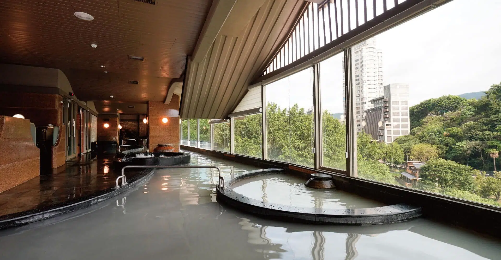
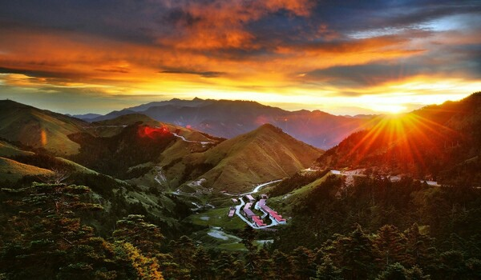
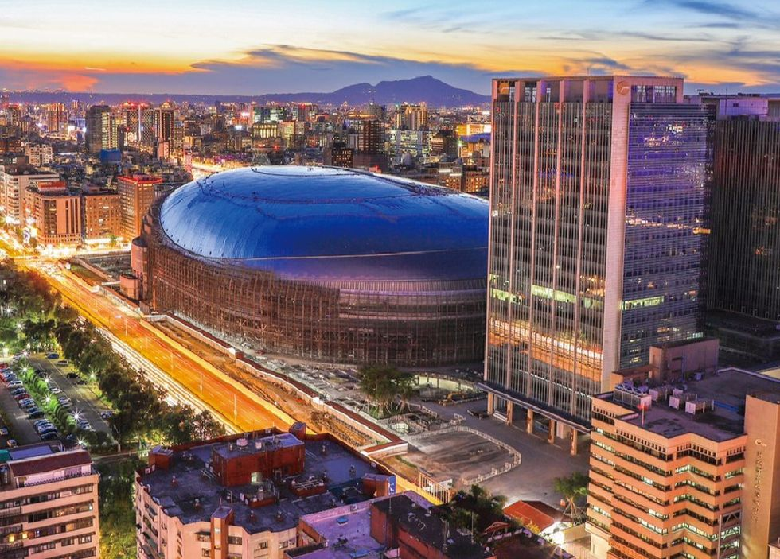
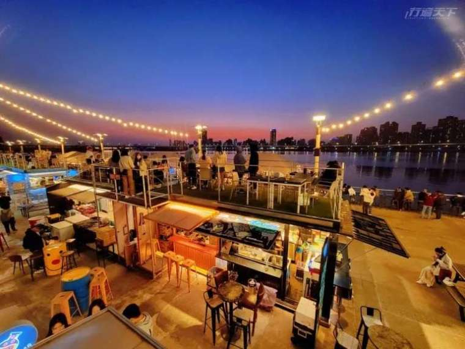
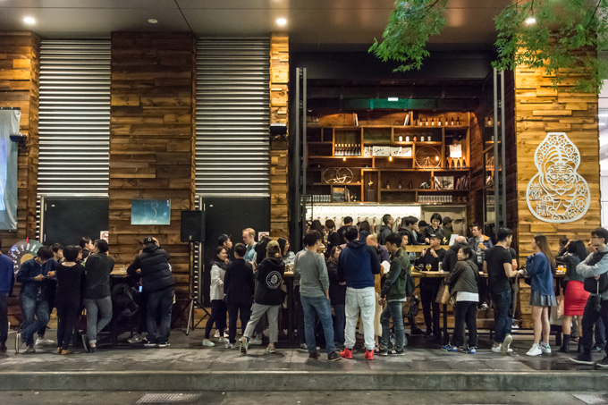

もっと見る
|

北投温泉は台北市の有名な温泉地で、リラックスできる自然環境があります。 |

陽明山は火山活動で形成された山で、小油坑などの観光名所があります。 |

西門町は台北の若者文化の中心地で、ショッピングやエンターテイメントが楽しめます。 |
|

大巨蛋は台北の主要なスポーツ・イベント会場で、様々なイベントが行われます。 |

大稻埕碼頭は台北の歴史的な港で、夕日が美しいスポットです。 |

台虎精釀は台北で人気のあるクラフトビール醸造所です。 |